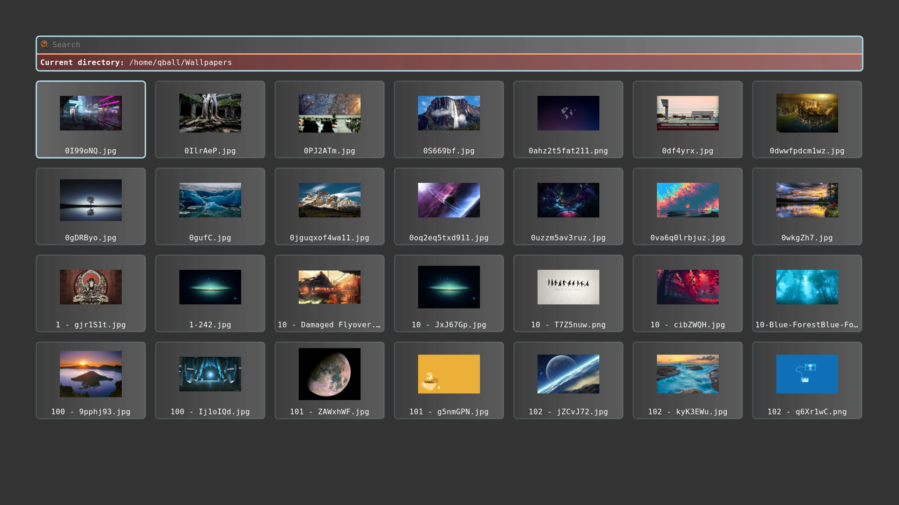
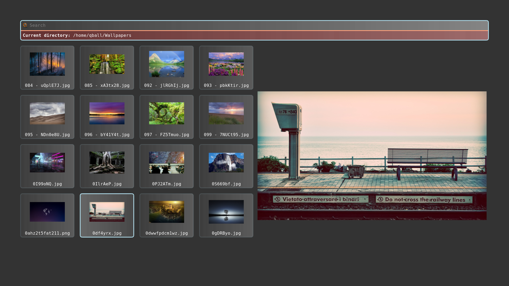

Dynamic Theme
A new addition in rofi 1.7.5 that did not get a lot of attention is support for the enabled keyword in the media statement and supporting environment values. Or more practical, you can modify your theme based on environment variables.
@media ( enabled: env(DO_X, false)) {
listview {
orientation: vertical;
}
}
You can now enable this part of the theme by running rofi with DO_X set.
DO_X=true rofi -show combi
Image browser example
In the current release, there is a fullscreen_preview as an example.
In this theme we are going to modify the filebrowser view with a preview widget that we can enable.
Lets start with the basic theme.
* {
background-color: transparent;
text-color: white;
}
window {
fullscreen: true;
background-color: black/80%;
padding: 4em;
children: [ wrap, listview-split];
spacing: 1em;
}
/** We add an extra child to this if PREVIEW=true */
listview-split {
orientation: horizontal;
spacing: 0.4em;
children: [listview];
}
wrap {
expand: false;
orientation: vertical;
children: [ inputbar, message ];
background-image: linear-gradient(white/5%, white/40%);
border-color: lightblue;
border: 3px;
border-radius: 0.4em;
}
icon-ib {
expand: false;
filename: "system-search";
vertical-align: 0.5;
horizontal-align: 0.5;
size: 1em;
}
inputbar {
spacing: 0.4em;
padding: 0.4em;
children: [ icon-ib, entry ];
}
entry {
placeholder: "Search";
placeholder-color: grey;
}
message {
background-color: red/20%;
border-color: lightsalmon;
border: 3px 0px 0px 0px;
padding: 0.4em;
spacing: 0.4em;
}
listview {
flow: horizontal;
fixed-columns: true;
columns: 7;
lines: 5;
spacing: 1.0em;
}
element {
orientation: vertical;
padding: 0.1em;
background-image: linear-gradient(white/5%, white/20%);
border-color: lightblue /15%;
border: 3px;
border-radius: 0.4em;
children: [element-icon, element-text ];
}
element-icon {
size: calc(((100% - 8em) / 7 ));
horizontal-align: 0.5;
vertical-align: 0.5;
}
element-text {
horizontal-align: 0.5;
vertical-align: 0.5;
padding: 0.2em;
}
element selected {
background-image: linear-gradient(white/25%, white/10%);
border-color: lightblue;
border: 3px;
border-radius: 0.4em;
}
When running this theme:
rofi -theme fullscreen-preview.rasi -show filebrowser

We already prepared the place where we are going to add a 2nd widget. Now lets, at the end of the theme, add the extra element in a media block.
@media ( enabled: env(PREVIEW, false)) {
The variable is PREVIEW, if it is not set false is used.
Otherwise the content of PREVIEW is parsed.
These will be merged into the theme on load:
/**
* Launching rofi with environment PREVIEW set to true
* will split the screen and show a preview widget.
*/
@media ( enabled: env(PREVIEW, false)) {
// preview widget
icon-current-entry {
expand: true;
size: 80%;
}
// override the children of `listview-split`
listview-split {
children: [listview, icon-current-entry];
}
// Reduce to 4 columns
listview {
columns: 4;
}
}
Now if we run it:
PREVIEW=true rofi -theme fullscreen-preview.rasi -show filebrowser
It looks like this:

We can add more sections; for example for text only we hide the images:
@media ( enabled: env(NO_IMAGE, false)) {
listview {
columns: 1;
spacing: 0.4em;
}
element {
children: [ element-text ];
}
element-text {
horizontal-align: 0.0;
}
}
Wallpaper picker
If you run latest git version, you can now easily make a wallpaper picker:
PREVIEW=true rofi -theme fullscreen-preview.rasi -show filebrowser -filebrowser-command 'feh --bg-scale' -filebrowser-directory ~/Wallpapers/